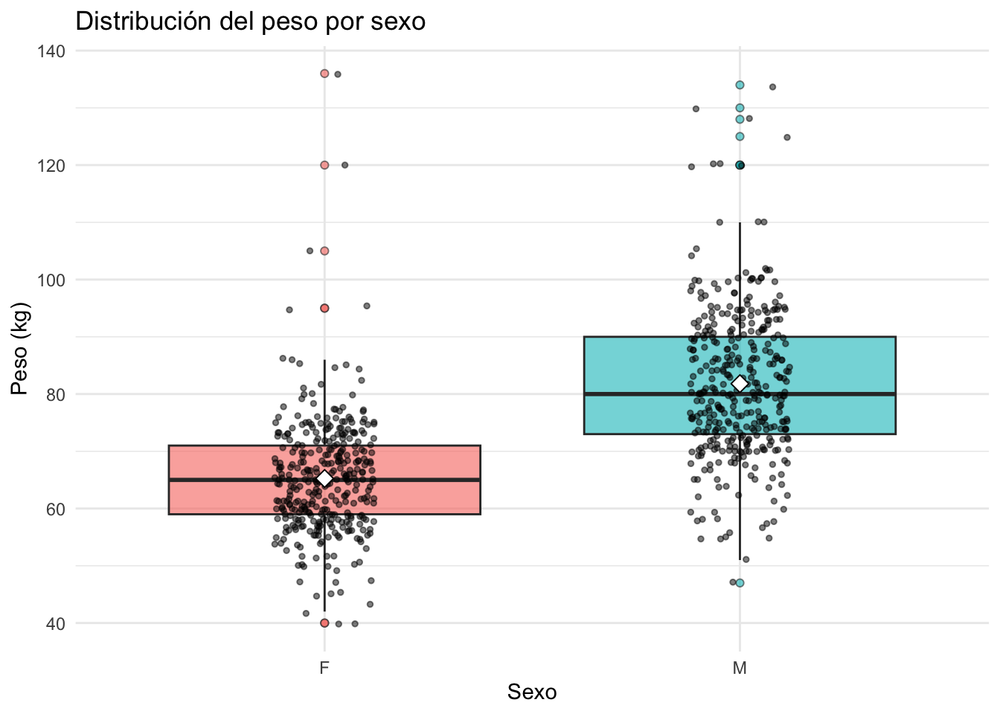

Número de medallas concedidas en cada uno de los cinco principales deportes en 2016
df %>%
filter(Year == 2016, !is.na(Medal)) %>%
count(Sport, name = "medal_count") %>%
arrange(desc(medal_count)) %>%
slice_head(n = 5) -> top5
kable(top5, caption = "Numero de medallas por deporte en 2016")
Table 2.1: Numero de medallas por deporte en 2016
| Athletics |
192 |
| Swimming |
191 |
| Rowing |
144 |
| Football |
106 |
| Hockey |
99 |
top5_sports <- c("Athletics", "Swimming", "Rowing", "Football", "Hockey")
df_filtrado <- df %>%
filter(Year == 2016, Sport %in% top5_sports, !is.na(Medal)) %>%
select(Sport, Name, Age, Sex, Team, Medal, Weight)
Distribución de la edad de los ganadores de medallas en los cinco principales deportes en 2016.
df_filtrado %>%
group_by(Sport) %>%
summarise(
n = n(),
mean_age = mean(Age, na.rm = TRUE),
median_age = median(Age, na.rm = TRUE),
sd_age = sd(Age, na.rm = TRUE),
IQR_age = IQR(Age, na.rm = TRUE),
min_age = min(Age, na.rm = TRUE),
max_age = max(Age, na.rm = TRUE),
.groups = "drop"
) %>%
arrange(desc(n)) -> dist_edad
kable(dist_edad, caption = "Tabla de distribución de edad")
Table 2.2: Tabla de distribución de edad
| Athletics |
192 |
26.41146 |
26 |
4.131665 |
5.25 |
19 |
40 |
| Swimming |
191 |
23.23037 |
22 |
4.013047 |
4.00 |
16 |
36 |
| Rowing |
144 |
28.12500 |
28 |
3.871855 |
6.00 |
20 |
40 |
| Football |
106 |
24.08491 |
23 |
4.336156 |
6.00 |
17 |
34 |
| Hockey |
99 |
26.38384 |
27 |
4.072574 |
5.00 |
19 |
37 |
Tendencia del peso de los atletas masculinos y femeninos en los cinco principales deportes en 2016.
df_filtrado %>%
group_by(Sex) %>%
summarise(
mean_w = mean(Weight,na.rm = TRUE),
median_w = median(Weight,na.rm = TRUE),
min_w = min(Weight,na.rm = TRUE),
max_w = max(Weight,na.rm = TRUE),
sd_w = sd(Weight,na.rm = TRUE),
IQR_w = IQR(Weight,na.rm = TRUE)) -> tendencia_w
kable(tendencia_w)
| F |
65.24507 |
65 |
40 |
136 |
10.04168 |
12 |
| M |
81.80914 |
80 |
47 |
134 |
12.97826 |
17 |
ggplot(df_filtrado, aes(x = factor(Sex), y = Weight, fill = Sex)) +
geom_boxplot(outlier.shape = 21, alpha = 0.6) +
geom_jitter(width = 0.12, alpha = 0.5, size = 1, color = "black") +
stat_summary(fun = mean, geom = "point", shape = 23, size = 3, fill = "white") +
labs(title = "Distribución del peso por sexo",
x = "Sexo",
y = "Peso (kg)") +
theme_minimal() +
theme(legend.position = "none")

Para F (mujeres): la mediana está alrededor de 65 kg y la caja (IQR) es relativamente estrecha, lo que indica que la mayoría de las atletas ganadoras se agrupan cerca de ese valor; los bigotes son moderados y aparecen pocos outliers, aunque hay una cola derecha leve con algunos pesos atípicos. Para M (hombres): la mediana se ubica aproximadamente entre 75–80 kg, la caja es más ancha (mayor IQR) señalando mayor dispersión interna, y los bigotes junto con numerosos puntos atípicos muestran una cola derecha más pronunciada —es decir, hay más observaciones con pesos extremos. En ambos grupos se observan valores atípicos que podrían deberse a posiciones/disciplinas específica